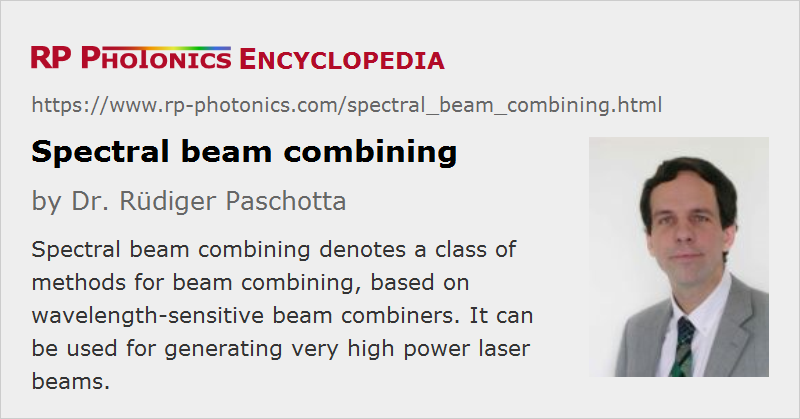

Spectral Beam Combining
Definition: a class of methods for beam combining, based on wavelength-sensitive beam combiners
Alternative term: wavelength beam combining
More general term: beam combining
Categories: general optics, lasers, methods
How to cite the article; suggest additional literature
Author: Dr. Rüdiger Paschotta
The term spectral beam combining (also called wavelength beam combining or simply wavelength combining, or incoherent beam combining) denotes a class of techniques within the more general area of power scaling by beam combining. The goal is to combine several high-power laser beams so as to obtain a single beam not only with correspondingly higher power but also with more or less preserved beam quality and thus with increased brightness. An alternative class of techniques, discussed in a separate article, is coherent beam combining.
Principle of Spectral Beam Combining
The general principle of spectral beam combining is to have several beams with non-overlapping optical spectra and combine them at some kind of wavelength-sensitive beam combiner. Examples of such combiners are prisms and diffraction gratings, which can deflect incident beams according to their wavelengths so that subsequently these all propagate in the same direction. Other approaches rely on optical components with wavelength-dependent transmission, such as dichroic mirrors or volume Bragg gratings.
For combining the outputs of a large number of different emitters of the same type, each emitter (laser) needs to have an emission bandwidth which is only a small fraction of the gain bandwidth, because a larger bandwidth would lead to a reduced beam quality. Furthermore, the beam combiner must have a sufficiently strong dispersion (e.g. angular dispersion), and the wavelengths of all emitters must be sufficiently stable.
Some approaches build on emitters which are independently tuned to some wavelength, and their outputs are aligned to reach the beam combiner (e.g. a diffraction grating) at the corresponding angle. It can be advantageous, however, to modify the scheme such that each emitter automatically adjusts its wavelength according to its spatial position. This is achieved e.g. with a setup developed at MIT Lincoln Laboratory [1, 5], as shown in Figure 1.
This principle was first applied to laser diodes in the form of diode arrays [1], but is also suitable for fiber lasers [3]. Whereas diode lasers have the advantages of being directly electrically pumped and of being very efficient, fiber-based systems can have a higher power per emitter, and the emitters can have a broader gain bandwidth, so that much higher powers are possible.
Of course, power scalability can be limited, e.g. by thermal effects on the wavelength-sensitive beam combiner. For transmission gratings, in particular, this introduces severe limitations, whereas reflection gratings could work at power levels of at least 100 kW, because they absorb less power and can be cooled from the back side.
General Remarks
Compared with coherent beam combining, the technique of spectral beam combining has the great advantage of not requiring mutual temporal coherence of the combined beams. This eliminates some important technical challenges and makes it much easier to obtain stable operation at high power levels. On the other hand, the multi-wavelength nature of the output is then unavoidable, which may not matter for some applications while excluding others where a narrow-bandwidth output is required.
Suppliers
The RP Photonics Buyer's Guide contains 3 suppliers for spectral beam combining optics. Among them:
Questions and Comments from Users
Here you can submit questions and comments. As far as they get accepted by the author, they will appear above this paragraph together with the author’s answer. The author will decide on acceptance based on certain criteria. Essentially, the issue must be of sufficiently broad interest.
Please do not enter personal data here; we would otherwise delete it soon. (See also our privacy declaration.) If you wish to receive personal feedback or consultancy from the author, please contact him e.g. via e-mail.
By submitting the information, you give your consent to the potential publication of your inputs on our website according to our rules. (If you later retract your consent, we will delete those inputs.) As your inputs are first reviewed by the author, they may be published with some delay.
Bibliography
| [1] | V. Daneu et al., “Spectral beam combining of a broad-stripe diode laser array in an external cavity”, Opt. Lett. 25 (6), 405 (2000), doi:10.1364/OL.25.000405 |
| [2] | E. J. Bochove, “Theory of spectral beam combining of fiber lasers”, IEEE J. Quantum Electron. 38 (5), 432 (2002), doi:10.1109/3.998614 |
| [3] | S. J. Augst et al., “Wavelength beam combining of ytterbium fiber lasers”, Opt. Lett. 28 (5), 331 (2003), doi:10.1364/OL.28.000331 |
| [4] | C. Hamilton et al., “High power laser source with spectrally beam combined diode laser bars”, Proc. SPIE 5336, 1 (2004), doi:10.1117/12.531595 |
| [5] | B. Chann et al., “Near-diffraction-limited diode laser arrays by wavelength beam combining”, Opt. Lett. 30 (16), 2104 (2005), doi:10.1364/OL.30.002104 |
| [6] | T. Y. Fan, “Laser beam combining for high-power, high-radiance sources”, JSTQE 11 (3), 567 (2005), doi:10.1109/JSTQE.2005.850241 (review paper) |
| [7] | T. H. Loftus et al., “Spectrally beam-combined fiber lasers for high-average-power applications”, J. Sel. Top. Quantum Electron. 13 (3), 487 (2007), doi:10.1109/JSTQE.2007.896568 |
| [8] | R. K. Huang et al., “High-brightness wavelength beam combined semiconductor laser diode arrays”, IEEE Photon. Technol. Lett. 19, 209 (2007), doi:10.1109/LPT.2006.890717 |
| [9] | A. Sevian et al., “Efficient power scaling of laser radiation by spectral beam combining”, Opt. Lett. 33 (4), 384 (2008), doi:10.1364/OL.33.000384 |
| [10] | O. Andrusyak et al., “Spectral combining and coherent coupling of lasers by volume Bragg gratings”, IEEE Sel. Top. Quantum Electron. 15 (2), 344 (2009), doi:10.1109/JSTQE.2009.2012438 |
| [11] | D. Vijayakumar et al., “Spectral beam combining of a 980 nm tapered diode laser bar”, Opt. Express 18 (2), 893 (2010), doi:10.1364/OE.18.000893 |
| [12] | A. Müller et al., “16 W output power by high-efficient spectral beam combining of DBR-tapered diode lasers”, Opt. Express 19 (2), 1228 (2011), doi:10.1364/OE.19.001228 |
| [13] | R. K. Huang et al., “Ultra-high brightness, wavelength-stabilized, kW-class fiber-coupled diode laser”, Proc. SPIE 7918, 791810 (2011), doi:10.1117/12.887259, doi:10.1117/12.887259 |
| [14] | Y. Xiao et al., “1-kilowatt CW all-fiber laser oscillator pumped with wavelength-beam-combined diode stacks”, Opt. Express 20 (3), 3296 (2012), doi:10.1364/OE.20.003296 |
| [15] | H. Meng et al., “High-brightness spectral beam combining of diode laser array stack in an external cavity”, Opt. Express 23 (17), 21819 (2015), doi:10.1364/OE.23.021819 |
See also: beam combining, coherent beam combining, power scaling of lasers, high-power lasers
and other articles in the categories general optics, lasers, methods

This encyclopedia is authored by Dr. Rüdiger Paschotta, the founder and executive of RP Photonics Consulting GmbH. How about a tailored training course from this distinguished expert at your location? Contact RP Photonics to find out how his technical consulting services (e.g. product designs, problem solving, independent evaluations, training) and software could become very valuable for your business!
|  |
If you like this page, please share the link with your friends and colleagues, e.g. via social media:
These sharing buttons are implemented in a privacy-friendly way!